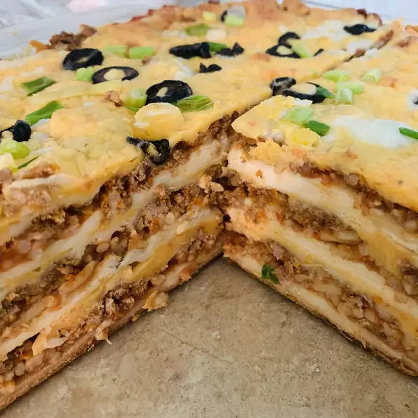

Taco Lasagna

The BEST of both worlds
Mexican and Italian clash in this unbelievable lasagna. The onlz problem with this dish, is that you wont know to pair it with a wine or a beer.
Ingredients
- 2 pounds lean ground beef
- 2 (1.25 ounce) packages taco seasoning mix
- 4 cloves garlic, minced
- ½ teaspoon cayenne pepper
- 1 tablespoon chili powder
- ½ cup water
- 18 (6 inch) corn tortillas
- 1 (24 ounce) jar salsa
- 1 cup sliced green onion
- 1 (16 ounce) container sour cream
- 1 ½ cups shredded Cheddar cheese
- 1 ½ cups shredded Monterey Jack cheese
Instructions
- Place ground beef in a large, deep skillet. Cook over medium high heat until evenly brown. Drain, then season with taco seasoning, garlic, cayenne pepper, chili powder and water. Simmer for 10 minutes.
- Preheat oven to 375 degrees F (190 degrees C). Grease the bottom of a 9x13 inch baking dish.
- Place 6 tortillas into the prepared baking dish. Spread 1/3 of the salsa on top of the tortillas. Spread 1/2 of the meat mixture evenly over the salsa. Sprinkle with 1/2 of the green onions. Drop 1/2 of the sour cream randomly over the green onions. Top with 1/2 cup Cheddar and 1/2 cup Monterey Jack cheese. Repeat layers. Top with 6 tortillas, spread with remaining salsa, and sprinkle with remaining cheese.
- Bake in a preheated oven for 30 to 45 minutes or until cheeses are melted.